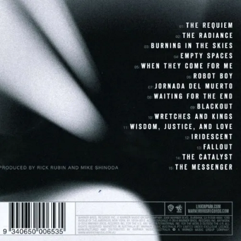
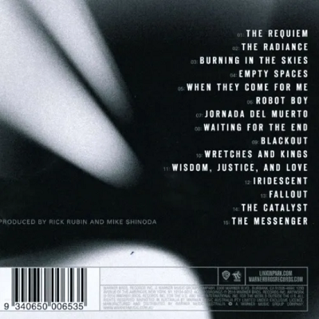

a thousand suns
 

Lançamento: 14 de Setembro de 2010
Produzido por: Rick Rubin e Mike Shinoda
Gravadora: Warner Bros. Records/Machine Shop Recordings
A Thousand Suns é o quarto álbum de estúdio da banda. O CD foi lançado em 14 de setembro de 2010 pela gravadora Warner Bros. Records. O álbum foi co-produzido por Rick Rubin e por Mike Shinoda. O primeiro single do álbum foi a canção “The Catalyst” e foi lançada oficialmente em 2 de agosto de 2010, de acordo com o site oficial da banda.
A Thousand Suns é um álbum conceptual que usa como tema a guerra, em especial em escala nuclear. O título do álbum vem do texto Bhagvad Gita do Hindu Sanskrit, “se a radiação de mil sóis estourasse pelos céus, seria como o esplendor do todo-poderoso.”, uma famosa citação de J. Robert Oppenheimer se referindo a bomba atômica. Em maio de 2012, o álbum havia vendido quase de 850 mil de cópias apenas nos Estados Unidos.
Desenvolvimento e Produção
Em outubro de 2008, Mike Shinoda revelou no seu blog que ele, Phoenix e Hahn estavam trabalhando em duas ideias na casa de Hahn, transportando para o estúdio em breve. Em 2008, Bennington anunciou que o quarto álbum de estúdio do Linkin Park seria lançado como um álbum conceptual, apesar deste conceito ainda não ter sido divulgado.
Em uma entrevista para a MTV em novembro de 2008, Bennington disse que “pareceu meio desencorajador pra mim, então achei que meu nível de confiança ia cair mas mas quando a ideia foi apresentada por um amigo nosso, eu gostei. Era uma ideia inspiradora e era algo que podíamos relacionar a um monte de coisas que gostamos de escrever”. Ele também confirmou que a banda planejava começar a gravar em dezembro numa sessão de seis semanas. Foi planejado que o álbum fosse lançado em meados de 2009 mas em março, Mike Shinoda disse em seu blog que “o álbum de Chester com o Dead By Sunrise viria no outono e o novo álbum do LP seriam só lançados no ano seguinte.”
Em maio de 2009, Linkin Park anunciou oficialmente que eles estavam trabalhando em seu quarto álbum que seria lançado em 2010. Shinoda também teria dito numa entrevista à IGN poderia ser comparado a Minutes to Midnight como uma “linha de consistência” e que também seria mais experimental e “com sorte mais ‘de ponta'”. Além disso, Bennington confirmou também que Rick Rubin seria o produtor do novo álbum.
Em 6 de junho, a banda revelou que seu novo álbum estava quase completado e anunciaram as primeiras datas para divulgação do disco em 2010. A turnê começou em Nova York, no dia 14 de setembro, data de lançamento do álbum. Também se confirmou que a banda faria uma passagem pelo Brasil no festival SWU (Starts With You), em Itu, São Paulo em 11 de outubro de 2010. Shinoda também anunciou que o Linkin Park estava com o álbum quase todo completado, incluindo as faixas, o título e a capa do CD.
Lançamento
Em 8 de julho, Linkin Park anunciou oficialmente o nome do novo álbum, A Thousand Suns, com o lançamento programado para 14 de setembro. A banda também falou que o primeiro single seria a canção “The Catalyst”, lançada em 2 de agosto. Em 31 de agosto de 2010, foi anunciado que a banda tocaria “The Catalyst” ao vivo pela primeira vez durante o MTV Video Music Awards de 2010 em 12 de setembro. Em 2 de setembro, uma versão em MP3 da canção “Wretches and Kings” foi enviado via email para todas as pessoas que pré-encomendaram o álbum. Shinoda disse que esta canção é uma homenagem a Chuck D e ao Public Enemy, que o inspiraram a fazer um álbum “tridimensional”. A canção conta com uma parte do discurso “Bodies upon the gears” do ativista Mario Savio.
Durante a primeira listening party do álbum, foi confirmado que a canção “Waiting For The End” seria o próximo single do CD. A página oficial do Linkin Park na internet na Alemanha postou então a confirmação, dando detalhes do single, e também postaram no site 28 segundos de cada faixa no disco. A versão inteira de “Waiting For The End” foi então liberado no Myspace da banda em 7 de setembro de 2010.
O vídeo clipe de “Waiting for the End” estreou em 8 de outubro de 2010 e foi dirigido por Joe Hahn.[ A banda tocou a música ao vivo durante o MTV Europe Music Awards de 2010 em Madri.
Em 22 de janeiro de 2011, Linkin Park anunciou que o próximo single deste CD seria a canção “Burning in the Skies” e foi oficialmente lançado em 21 de março pela Warner Records. O vídeo clipe estreou oficialmente em 23 de fevereiro.
Em 5 de março de 2011, Mike Shinoda disse que seria lançado na Europa o chamado A Thousand Suns +, um relançamento limitado do álbum, que foi lançado em 28 de março e traz um DVD do show que a banda fez em Madri, na Puerta de Alcalá, em 7 de novembro de 2010.
Em 13 de abril, Shinoda anunciou o novo single, a canção “Iridescent”. A canção sofreria algumas alterações para ser lançada como parte da trilha sonora do filme Transformers: Dark of the Moon. Um vídeo clipe foi também lançado com o single.
Recepção e Comercial
O álbum estreou em primeiro na Billboard 200, após vender 241 mil cópias na primeira semana de vendas nos Estados Unidos. Na segunda semana, as vendas do álbum cairam para 70 mil unidades comercializadas. O CD estreou em número #2 no Reino Unido vendendo 46.711 cópias, atrás do álbum Science and Faith da banda The Script. No Canadá, o álbum estreou em primeiro lugar, vendendo mais de 23 mil cópias na sua semana de estreia. Ao todo, A Thousand Suns vendeu em uma semana mais de 523 mil cópias no mundo todo, terminando em primeiro lugar na chart World Albums Top 40.
Em maio de 2012, A Thousand Suns já havia vendido mais de 845 mil cópias nos Estados Unidos e foi certificado como disco de ouro pela RIAA.
Crítica
A Thousand Suns recebeu várias críticas e comentários antes mesmo de seu lançamento, e até o momento as críticas feitas foram geralmente boas. A Metacritic tirou um índice, que vai até 100, dos reviews dos principais críticos, e deu ao álbum uma média de 66, baseado em dez reviews que foram bem favoráveis.
Leah Greenblatt da Entertainment Weekly deu ao álbum nota B dizendo que “em A Thousand Suns a banda, às vezes, consegue juntar de forma estranha um brunido som industrial, um jeito de hip-hop e um jeito adolescente que parece chocante”. Ian Winwood da Kerrang! disse que o álbum é “Excelente!”, e disse que “que pode ser descrito seguramente como um álbum politico”. Ele elogiou a letra das canções, dizendo que “essas canções foram mais construídas do que escritas.”, e completou comparando o álbum ao disco Fear of a Black Planet de 1990 do grupo de rap Public Enemy. Dave de Sylvia da Sputnikmusic, por sua vez, disse que o disco “um álbum de rock bem feito”, e falou que era inclusive melhor que seu predecessor, Minutes to Midnight (2007), mas não tem a mesma vida e animação do álbum de estreia, Hybrid Theory (2000). James Montgomery da MTV elogiou o disco por sua ” mudança alastrada, contraditória e ambiciosa” e comparou com o álbum Kid A de 2000 do Radiohead, mas falou que soava mais otimista.
Mikael Wood da revista Spin deu ao álbum seis de dez estrelas, dizendo que o CD “contem bastante material agressivo” e chamou a faixa “The Messenger” de “a faixa mais inesperada no ousado A Thousand Sun”. Jody Rosen da Rolling Stone deu ao álbum três de cinco estrelas, dizendo que soa como um “um tributo ao Linkin Park matador”.
A revista australiana Music Network deu ao álbum um parecer razoável, dizendo que “é uma mudança radical no estilo da banda, sendo esta mudança bem desequilibrada… tem bons momentos (“The Catalyst”, “Wretches and Kings”), e outras faixas parecem mais experimentais do que canções bem formadas.” Johnny Firecloud da “AntiQuiet” não gostou do álbum, chamando-o de uma “farsa melodramática” e ainda falou que “é uma sentimentalista mecanizada […] as 15 faixas são um chamado para luta e para o ativismo de forma não muito convincente.” Jim Farber do New York Daily News deu ao álbum um de cinco estrelas, dizendo que “não é mais que 15 partes que formam um CD de 47 minutos de forma fragmentada.
músicas
- The Requiem
- The Radiance
- Burning In The Skies
- Empty Spaces
- When They Come For Me
- Robot Boy
- Jornada Del Muerto
- Waiting For The End
- Blackout
- Wretches & Kings
- Wisdom, Justice & Love
- Iridescent
- Fallout
- The Catalyst
- The Messenger